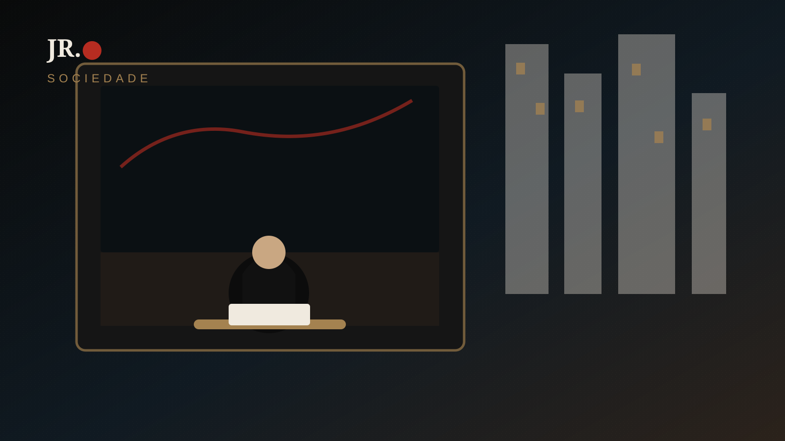

No Japão, uma porta fechada pode proteger a privacidade, mas também tornar menos visível quem precisa de companhia. Morar sozinho não tem um único significado: para algumas pessoas é autonomia; para outras, isolamento; para muitas, as duas coisas variam com a fase da vida.

O cuidado com a generalização
Contar domicílios unipessoais não mede automaticamente solidão. A experiência subjetiva depende de vínculos, rotina, saúde, mobilidade, trabalho, renda, vizinhança e acesso a serviços.
Privacidade também é valor
Para muita gente, morar só representa descanso, organização e liberdade. O problema começa quando a independência deixa de vir acompanhada de oportunidades reais de encontro e apoio.
A cidade como rede de encontro
Uma visita combinada, um grupo de bairro, um centro comunitário, uma conversa sem pressa ou uma rotina de pequenos contatos podem reduzir a sensação de invisibilidade. A cidade também se constrói pelas possibilidades de vínculo que oferece.
Uma pergunta melhor
Em vez de imaginar “o japonês solitário”, a pergunta mais útil é: quais espaços, horários e serviços tornam mais fácil manter relações reais? Essa resposta muda conforme idade, região, condição econômica e história pessoal.